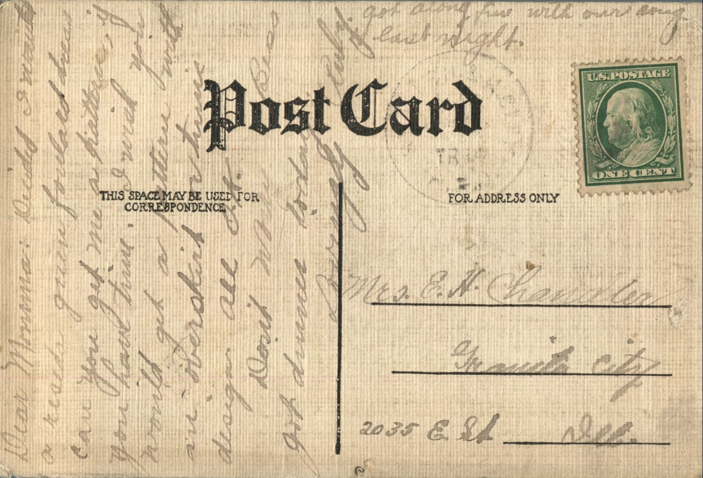
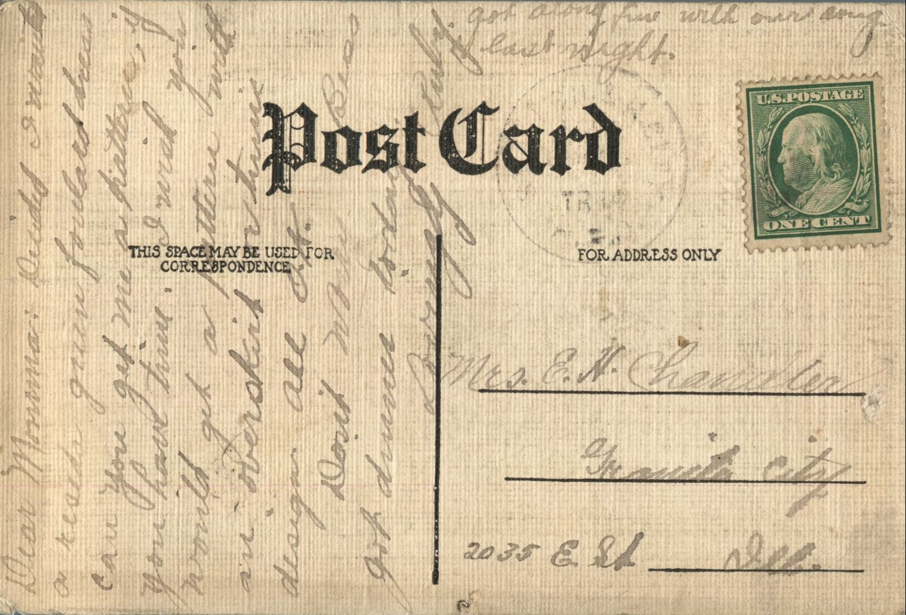
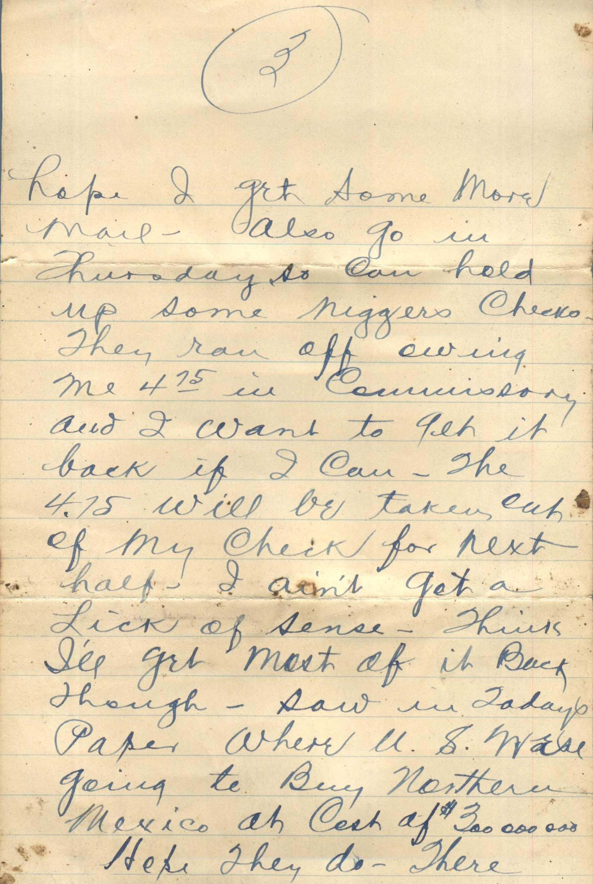
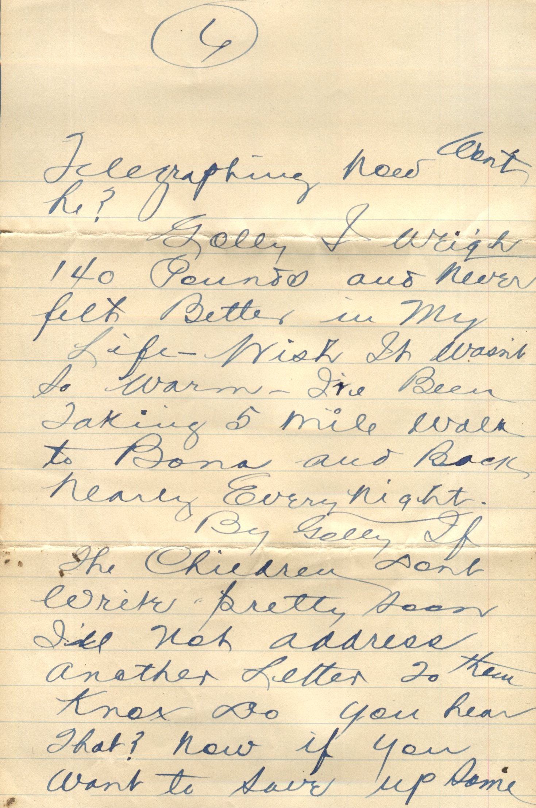
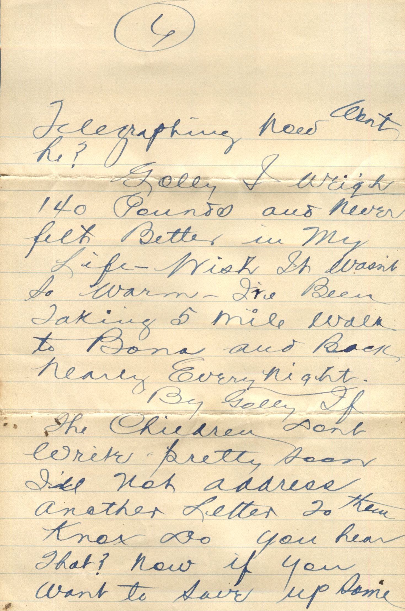
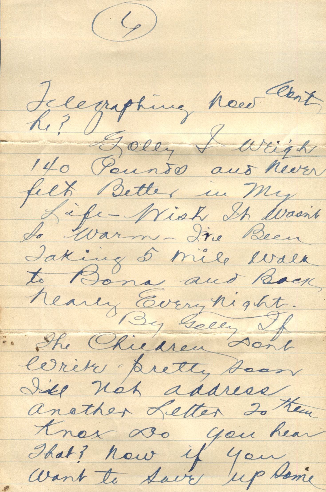

{kind=link}
From: Ruby Chandler, To: Jeanette Knox Chandler
 From: Ruby Chandler, To: Jeanette Knox Chandler
From: Ruby Chandler, To: Jeanette Knox Chandler
Mrs. E.H. Chandler 2035 E. St. Granite City, Ill.
Dear Mamma, Decided I wanted a resido green foulard dress. Can you get me a pattern, if you have time. I wish you would get a pattern with an overskirt or tunic design. All ok. Don't worry Bess got dinner today Lovingly, Ruby Got along fine with our song last night.
From: Ruby Chandler, To: Pearl Ellis
From: Ruby Chandler, To: Pearl Ellis
Miss Pearl Ellis Manchester, Illinois
Merry Xmas My Dear Pearl, I have just come home from holidays. Wish you were here. I have have thought of you so often but have been awful busy. I'm sure going to write soon. Lovingly, Ruby
From: Ruby Chandler, To: Grace Chandler
 From: Ruby Chandler, To: Grace Chandler
From: Ruby Chandler, To: Grace Chandler
Miss Grace E.
Dear Grace and all Received you and children's letters also Mamma's yesterday evening. Was so glad to get all of them. Have had two long letters from Mae also your talking of all your embroideries gave me an inspiration to pursue mine. I'm working on a library table runner. Think it will be awfully pretty. The children's letters were so cute. I love yo hear from them. I certainly feel mighty blue over my little plate. I've about finished another though. I'll let you view the remains later for I kept them you can bet. Will write a letter tomorrow. Love to all, R.
From: Martin Chandler, To: Unknown

 

From: Martin Chandler, To: Unknown
Missing Page 1
Page 2: her today. That's right Knox. You save all your letters-Ha. You all needn't worry about the Mexicans hurting me. I've got a Negro gang here and have had ever since I took this camp. Besides all the Mexicans around here are all docile as a lamb. Sure is warm around here. I was in Denison today to do some shopping. Going in again day after tomorrow. Sure hope I get some more mail. Also go in Thursday, so can hold up some niggers checks. They ran off owing me $4.75 in commissary and I want to get it back if I can. The $4.75 will be taken out of my check for next half. I aint get a lick of sense. Think I'll get most of it back though. Saw in today's paper where U.S. was going to buy northern Mexico at cost of $300,000,000. Hope they do - There would probably be a lot of work going on, building railroads, etc. I'm going to stay until end of May so can get few clothes. I'm plume out of style with the duds I've got. I'll get $5.00 day after tomorrow. Golly it's sure hot. How's Aunt Sarah and Uncle Jim? If I stay here until May I'll be getting at least $35.00. That letter from Corbett was all right in a way. He said if I referred to them they would give same information as service letter would carry but didn't say what kind of information a service letter would carry. That letter was from Herschberger anyway but I'm pretty sure it's OK and will serve OK. when I look for job telegraphing. Gee Ralph will need his job telegraphing now wont he? Golly I weigh 140 pounds and never felt better in my life. Wish it wasn't so warm. I've been taking 5 mile walk to Bona and back nearly every night. By Golly if the children don't write pretty soon I'll not address another letter to them. Knox do you hear that? Now if you want to save up some letters you had better get busy and write. Is Lucerne going to school in Morrisonville. Gee old Parish sure praises Dr. Thurmon in his paper each week doesn't he? Gee I'll bet Papa sure is busy now. Wish I was there to take few 31st. If I ever go through Kansas City I'm going get that service letter. Well guess I'd better close. 8:00 pm now and I want to cool off. All write. Lovingly, Martin
From: Doss Bryant, To: Grace Chandler
From: Doss Bryant, To: Grace Chandler
Postcard Info: H.E.L. Theochrom Series No. 1137. Printed in Germany
Grace Chandler Pearl, Illinois
Doss Bryant
From: Unknown, To: Ruby Chandler
From: Unknown, To: Ruby Chandler
Postcard Info: No. C 14665 Published by Rombauer Coal Co., Novinger, Mo. Made in Germany
Picture Info: Davis Creek., No. 1 Lump Coal from mines of Rombauer Coal Company, Novinger, Mo. Emergency Storage at St. Joseph and Grand Island Railways Company at Hanover, Kas.
Ruby you had better address your next letter to Colo Springs Genl. Del. and marked to be returned to the address of Greensfield Bros if not called for within 5 days. Till the next time
I found this card in my collection.
From: Unknown, To: Bess Chandler
From: Unknown, To: Bess Chandler
Miss Bess Chandler Pearl, Illinois
Dear Bess, Am working hard now in the store but not in the soda fountain. Had a dandy launch ride the other night. We are planning for a fishing trip. Hope it turns out better than the one on the 4th. Love to all. Ans. soon.
From: Johnie, To: Lucerne Chandler
From: Johnie, To: Lucerne Chandler
Miss Lucerne Chandler Pearl, Illinois
To Lucerne From "Johnie"
From: Fern Gray, To: Miss Chandler
From: Fern Gray, To: Miss Chandler
To Miss Chandler From Fern Gray